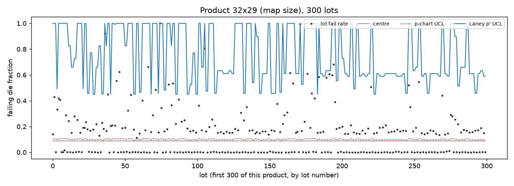
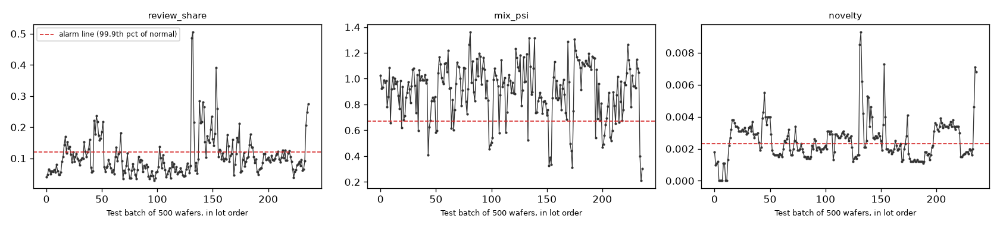

A chip fab tests every die and marks it pass or fail. The fails often form a shape. Each shape points to a different process problem. This project reads the maps, names the shape, says when it is unsure, shows similar past wafers, questions its own labels, flags abnormal lots and warns when new wafers stop looking like the ones it was checked on.
Each wafer below comes from a lot the models never trained on, picked at random, misses included (red border). Click one to see the ensemble's answer, how sure it is, what that pattern may mean and the five most similar wafers from other lots.
The cut-off was tuned on validation lots to send 5% to review. Some wrong answers are still confident, so review is a safety net, not a guarantee.

